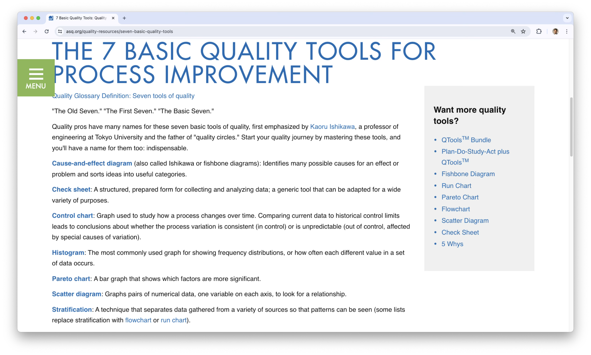
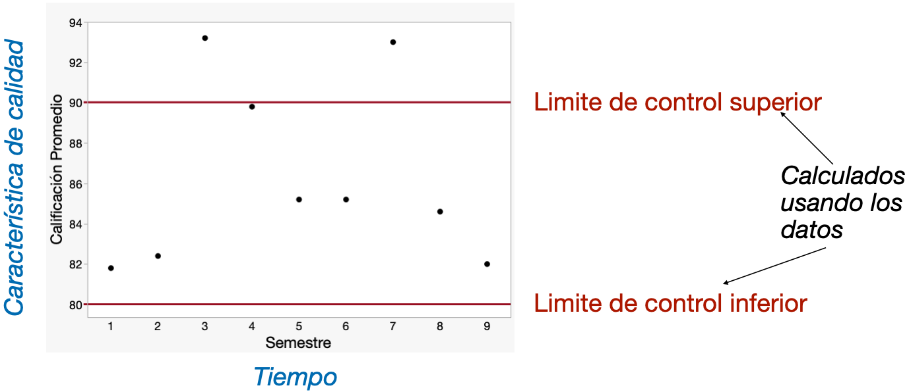
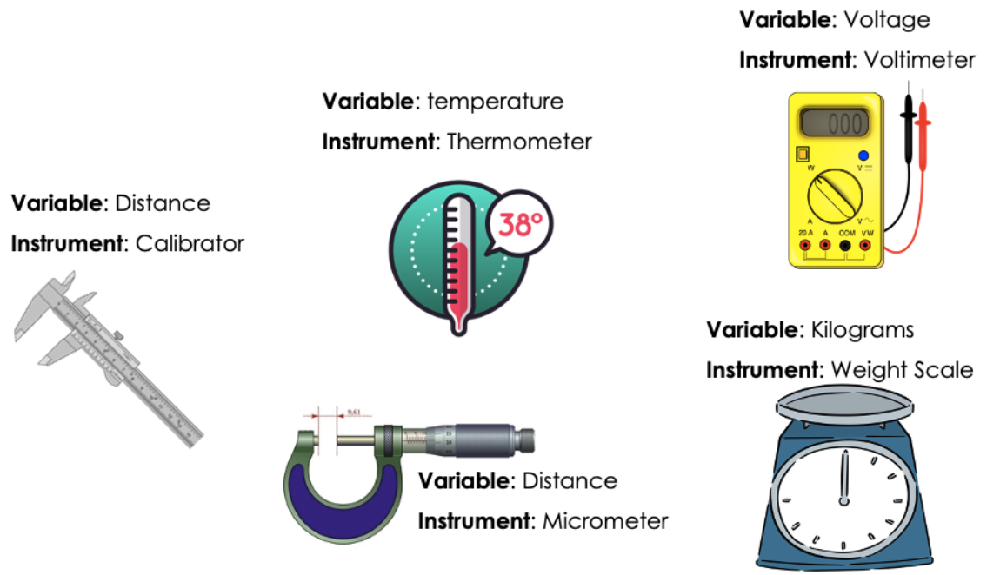
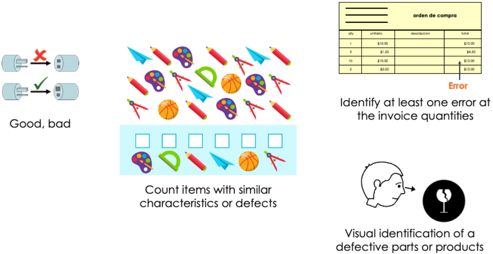
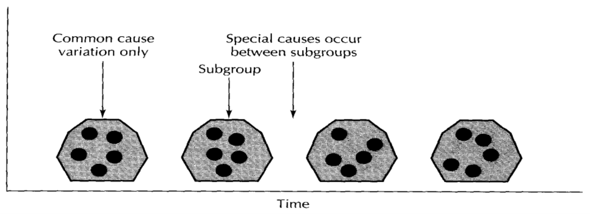
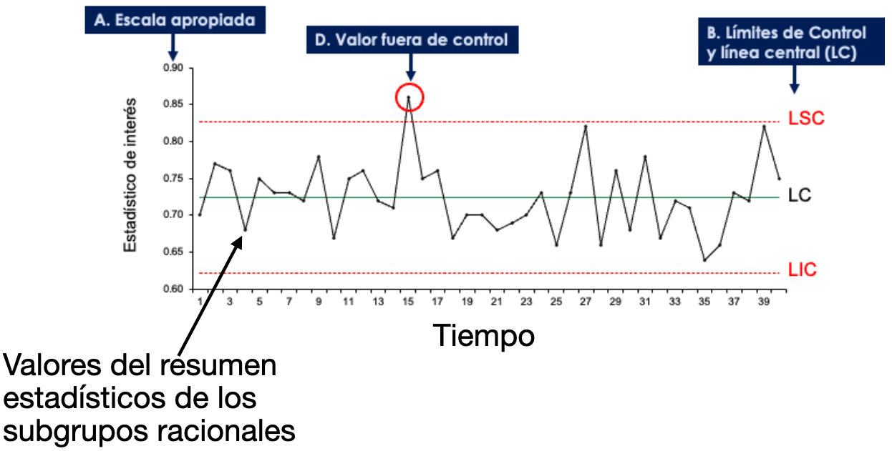

Introducción al Monitoreo de Procesos
IN2032: Análisis Estadístico de Datos
Agenda
Conceptos Básicos y Herramientas
Introducción a las Gráficas de Control
Control de Calidad
- El control de calidad es un conjunto de herramientas estadísticas para el mejoramiento de calidad.
El mejoramiento de calidad significa eliminar el desperdicio sitemáticamente.
Para lograr esto, podemos
- Reducir la variabilidad del proceso de producción.
- Eliminar los defectos de la unidad producida.
Monitoreo Estadístico de Procesos
Uno de los métodos más importantes en el control de calidad es el monitoreo estadístico de procesos (MEP).
La motivación del MEP es que no es práctico inspeccionar la calidad dentro de un producto: el producto debe de hacerse correctamente la primera vez.
Entonces el proceso de fabricación debe de ser estable y tener la capacidad de operar con poca variabilidad.
El monitoreo se realiza tomando muestras de la unidad de producción y midiendo alguna característica de calidad.
. . .
El MEP es una herramienta para reducir la variabilidad de un proceso sistemáticamente.
Tipos de variabilidad
En cualquier proceso de producción, sin importar lo bien diseñado que esté o la atención que se preste a su mantenimiento, siempre existirá cierta variabilidad natural o inherente.
A esta variabilidad natural es debido a causas aleatorias del proceso, las cuales son una parte inherente del proceso.
Por ejemplo
- Fluctuaciones pequeñas en un proceso de manufactura, variaciones pequeñas en tiempos de entrega, o variaciones pequeñas en el peso de dos productos idénticos. Todo esto debido a factores naturales o esperados.
Un proceso está bajo control estadístico cuando opera únicamente en presencia de causas aleatorias de variación.
Existen otro tipo de variabilidad que pueden estar presente en la producción de un proceso. Esta variabilidad es ocasionada por causas asignables.
. . .
Ejemplos de causas asignables son:
Máquinas mal calibradas
Errores del operador en el proceso
Materias primas defectuosas
. . .
Cuando la variabilidad debido a causas asignables es mayor que la variabilidad natural, se dice que el proceso no está bajo control. Es decir, el proceso tiene un nivel inaceptable de desempeño.
Herramientas del MEP
El objetivo del MEP es detectar con rapidez la presencia de causas asignables del proceso, para que pueda hacerse la investigación del proceso y aplicarse las acciones correctivas antes de que se fabriquen muchas unidades no conformes.
La gráfica de control es una técnica de monitoreo en linea para este fin. Es una de las 7 herramientas básicas de calidad.

Introducción a las Gráficas de Control
Gráficas de control
La gráficas de control nos ayudan a monitorear una característica de calidad de un producto. Dicha característica es la variable bajo estudio.
Una gráfica de control:
puede estimar los parámetros de un proceso de producción y determinar la capacidad de un proceso para cumplir con las especifícaciones.
Proporciona información útil sobre si la variabilidad del proceso es debido a causas asignables en el proceso.
En esencia, es una prueba de hipótesis de que el proceso está en un estado de control estadístico.
¿Cómo se ve una gráfica de control?
Monitoreando las calificaciones durante los semestres de mi carrera

Los pasos para trabajar con una gráfica de control son:
Definir el tipo de gráfica dependiendo de la variable bajo estudio.
Recolectar varias muestras (conjuntos) de observaciones durante un periodo de tiempo.
- Definir el número de observaciones en la muestra
- Seleccionar la frecuencia en que se recopilaran las muestras
- Construir e interpretar la gráfica.
1. El tipo de gráfica de control depende del tipo de variable
Recuerda que hay dos tipos de variables:
Variables numéricas (continuas):
Pueden tomar muchos valores diferentes dentro de un rango.
Por ejemplo, diámetro, peso, temperatura, nivel de ruido.
Variables discretas (categóricas):
Pueden tomar un numero pequeño y entero de valores
Por ejemplo, los defectos por unidad y las unidades defectuosas por lote.
Mediciones sobre variables numéricas

Mediciones sobre variables discretas

Tipos de gráficas de control
Las gráficas de control comúnes para variables numéricas son:
- Gráfico de promedios-rangos (\(\bar{X}\) y \(R\)).
- Gráfico para valores individuales.
A estas gráficas también se les llama gráficas control para variables.
Las gráficas de control más comúnes para variables categóricas son:
Gráfica p para la proporción de defectos.
Gráfica np para el número de unidades defectuosas.
A estas gráficas también se les llama gráficas control para atributos.
Recolección de datos
Los datos para construir un gráfico de control se recopilan en varias muestras tomadas durante un período de tiempo. Estas muestras se denominan subgrupos racionales.
El plan de muestreo de estos subgrupos tiene los siguientes elementos:
Número de subgrupos racionales (\(k\)): debe seleccionar un número \(k\) grande, normalmente 20 o más.
Tamaño del subgrupo (\(n\)): la naturaleza de la variable de estudio te ayudará a definir el tamaño del subgrupo.
Frecuencia: los subgrupos se toman secuencialmente en el tiempo.
Esquema de muestreo: usualmente muestreo aleatorio.
Creación de subgrupos racionales
Para crear subgrupos racionales, el principio básico a seguir es que toda la variabilidad dentro de las unidades de un subgrupo racional debe deberse a causas aleatorias y ninguna a causas asignables.

Es decir, los subgrupos deberán seleccionarse tal que, en la medida de lo posible, la variabilidad de las observaciones dentro de un subgrupo deberá incluir toda la variabilidad natural y excluir la variabilidad por causes asignables.
Esto permitirá a la gráfica de control señalar puntos que se encuentran fuera de control.
Métodos para generar subgrupos racionales
Existen dos métodos para generar subgrupos racionales:
- Los elementos de cada muestra son fabricados cerca del momento en que se realiza el muestreo.
- Detecta cambios en el proceso
- Minimiza la variabilidad debida a causas asignables dentro de una muestra, y maximiza la variabilidad entre las muestras en caso de que haya causas asignables presentes.
- Proporciona mejores estimaciones de la desivación estándar del proceso.
- Los elementos de cada muestra son seleccionados de todas las unidades producidas desde que se tomó la última muestra.
- En este caso, cada subgrupo es una muestra aleatoria de la producción total del proceso en el intervalo de muestreo.
- Permite tomar decisiones relativas a la aceptación de todas las unidades del producto que se han producido desde la última muestra.
- Es útil en situaciones donde el proceso se sale de control pero vuelve a el inmediatamente.
Comentarios
Idealmente, el plan de muestreo tiene:
- Mediciones de grupos que se toman frequentemente.
- Los subgrupos son grandes, lo cual facilita la detección de los cambios pequeños en el proceso.
Sin embargo, este tipo de muestreo tiende a ser muy costoso cuando la recopilación de datos se hace manualmente.
En estos casos, la práctica actual de la industria tiende a favorecer los registros frecuentes de subgrupos pequeños.
Registrar los datos
Una vez teniendo los subgrupos racionales, debemos de registrar mediciones sobre sus elementos. Estas mediciones formaran el conjunto de datos.
Para realizar las mediciones, necesitamos un instrumento de medición y una persona que utiliza este instrumento.
. . .
Durante la medición, registra lo siguiente:
Los valores individuales y la identificación de eventos (si aplica) para cada subgrupo.
Cualquier observación relevante que pueda ayudarnos a explicar inconsistencias en el análisis.
Características de un buen sistema de medición
Proporcionar resultados que se acerquen lo más posible al valor verdadero.
Producir resultados consistentes cuando se mide el mismo objeto en las mismas condiciones.
Ser reproducible en el sentido que se deben de obtener mediciones similares por otra persona usando el mismo u otro instrumento.
Ser sensible para detectar cambios pequeños en el objeto medido.
Tener un tiempo de respuesta rápido.
Ser robusto en el sentido de ser capaz de mantener su precisión y fiabilidad incluso en condiciones adversas.
Procesamiento de datos
Para generar la gráfica de control, se calculan resúmenes estadísticos de los datos de cada subgrupo. Estos resumenes pueden ser:
Promedio o media
Desviación estándar
Rango: la diferencia entre el máximo y el mínimo de los datos.
Recapitulación
